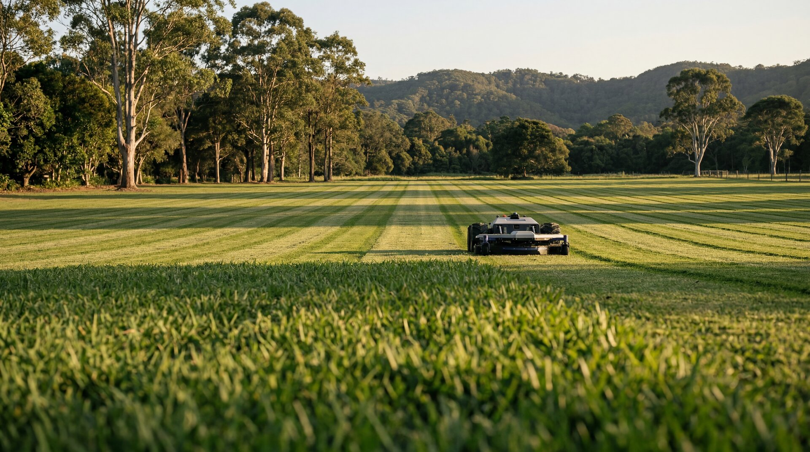

Eight acres a day. Not twelve.
The spec sheet for our machine says it can mow up to twelve acres a day. We tell clients eight. Worth explaining why, because the gap between those two numbers…
Practical advice on autonomous mowing, grounds management, and getting the most from your Northern Rivers lifestyle property.
The spec sheet for our machine says it can mow up to twelve acres a day. We tell clients eight. Worth explaining why, because the gap between those two numbers…

Professional Acreage Mowing Alstonville: Autonomous Technology for Plateau Properties Maintaining expansive rural properties across Alstonville's distinctive plateau landscape demands consistent attention, reliable equipment and countless hours behind the wheel of…

Acreage Mowing Myocum: Robotic Precision for Northern Rivers Properties Myocum sits quietly in the Byron Bay hinterland, where rolling paddocks meet eucalyptus ridgelines and properties span anywhere from five to…
Professional Acreage Mowing Federal Property Owners Trust Maintaining a rural property in Federal requires more than occasional attention—it demands consistent, reliable care that respects both the land and your time.…
Acreage Mowing Mullumbimby: Your Complete Northern Rivers Property Care Solution When you own acreage in Mullumbimby, maintaining your land becomes a constant balancing act. Between the lush subtropical growth that…

Why Acreage Mowing in Newrybar Demands a Smarter Approach Newrybar sits in the heart of the Northern Rivers hinterland, where rolling acreage properties blend native bushland with cleared pasture and…
Professional Acreage Mowing Ewingsdale: Autonomous Solutions for Hinterland Estates Ewingsdale's rolling hills and premium rural properties demand a groundskeeping approach that matches the prestige of the landscape. For landholders managing…

Why Solar Farm Mowing and Vegetation Management Matters Solar farms across the Northern Rivers region face a persistent challenge: maintaining clear ground beneath and around photovoltaic arrays while controlling operational…
Understanding Autonomous Mowing Subscription Byron Bay: What's Actually on Offer If you're a rural property owner in Byron Bay, Bangalow, or the wider Northern Rivers region, you've likely heard the…

The True Price of Fortnightly Mowing Cost Acreage Properties in the Byron Hinterland For lifestyle property owners across Byron Bay, Bangalow and the Northern Rivers, fortnightly mowing cost acreage maintenance…
Why Acreage Mowing Bangalow Properties Requires a Different Approach Managing rural land around Bangalow presents unique challenges that standard residential mowing services simply aren't equipped to handle. Whether you're maintaining…

Is Your Current Acreage Mowing Solution Falling Short? For property owners across the Northern Rivers, finding a reliable and effective acreage mowing solution has always been a challenge. Whether you're…
Why Steep Block Mowing in the Northern Rivers Demands a Smarter Approach If you own rural property across the Byron Bay hinterland, you already know the challenge: steep block mowing…

Why Council Mowing in the Northern Rivers Is Moving Toward Autonomous Solutions Local councils across the Northern Rivers are under mounting pressure to deliver immaculate parks, reserves and roadsides while…
Why Holiday Rental Property Mowing in Byron Bay Demands a Smarter Approach Managing a holiday rental property in Byron Bay comes with unique challenges that traditional property management rarely addresses.…
Autonomous Mowing vs Ride-On: Understanding Your Property Maintenance Options For property owners across Byron Bay and the Northern Rivers, maintaining large acreage has traditionally meant hours in the saddle of…

Understanding Acreage Mowing Cost in Byron Bay and the Northern Rivers If you own rural property in Byron Bay, you'll know that maintaining large acreage comes with its challenges. Whether…